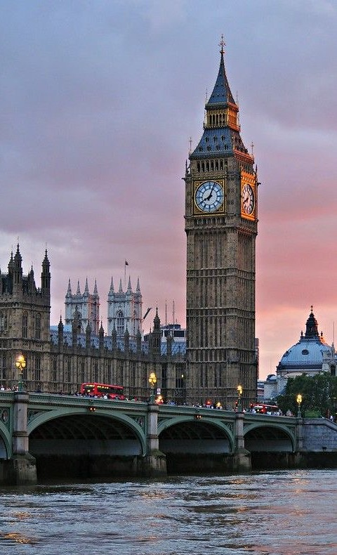

DAY 1 - CENTRAL LONDON
After arriving from Turin by bus and leaving your luggage at the hotel:
- Big Ben – The symbol of London
- Palace of Westminster – The Parliament (next to Big Ben)
- Westminster Abbey – A very famous historic church
- Walk to Buckingham Palace – The King’s residence
- Relax in St. James's Park
Afternoon:
- London Eye – Beautiful view of the city
- Evening walk in Piccadilly Circus
Evening:
- Walk around Piccadilly Circus and enjoy the lights.
- Explore Leicester Square (cinemas, shops, street performers).
- Optional: quick visit to China Town for a snack or dinner.